REP Dashboard
Project Details
This is an automated dashboard that displays otherwise manually generated information used for Real Estate Photography and related processes. REP Dashboard takes photoshoot information from Google Calendar, aggregates it via Google Sheets, then presents it dynamically as a web app. When used, this centralized hub eliminated approximately 10 hours a month in manual data entry, provided data insights over time (like a heat map), and improved time management for myself as a photographer.
Note: "REP" is an acronym for real estate photographer. "REP Dashboard" was changed from its original name to avoid copyrighting.
To save on resources and due to it not being currently used, REP Dashboard is not live.
User Interface
The user interface includes a top header and a bottom navigation. The botton nav has five tabs each with their own purpose. Below are screenshots and functionality discriptions of each tab.
Interactive Features: Add To Favorites • Delete From Favorites • Search Old Shoots • Select Different Time Ranges For Pay And Mileage
Dashboard
- Display shoots from previous workday.
- Feature: Add To Favorites
- Display each day's shoots on a Google Map as a numbered pin.
- List details and location for each day's shoots.
- List projected pay and mileage for each day.
- Show upcoming shoots and details.
- Show most used resource links.
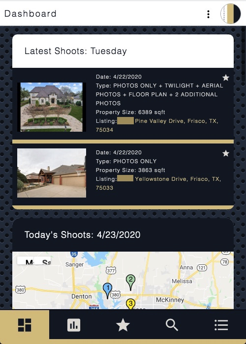 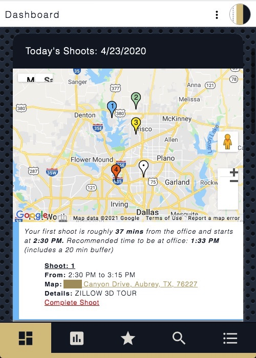 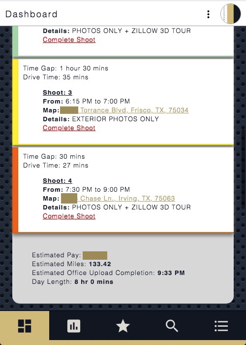 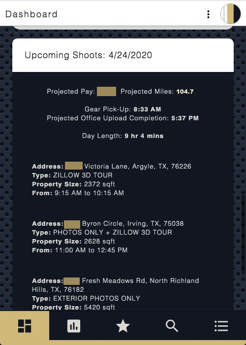 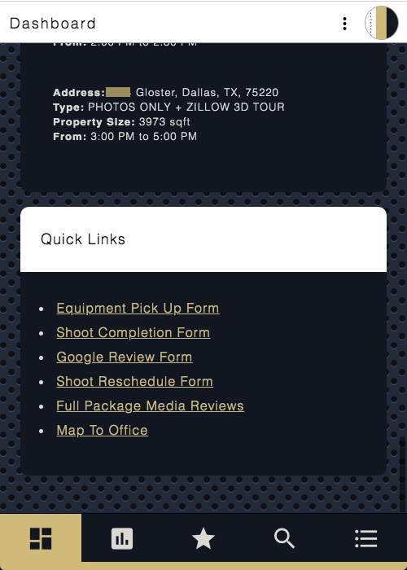
Photographer Stats
- Display user's accumilated pay and mileage in an interactive selector.
- Feature: Toggle Through Different Time Ranges
- Display user's accumilated photoshoot total.
- Display more accumilative user statistics.
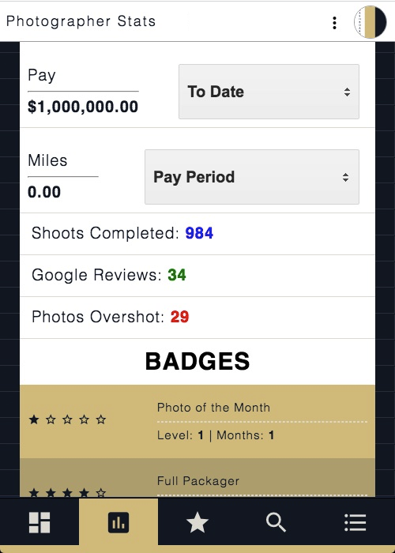 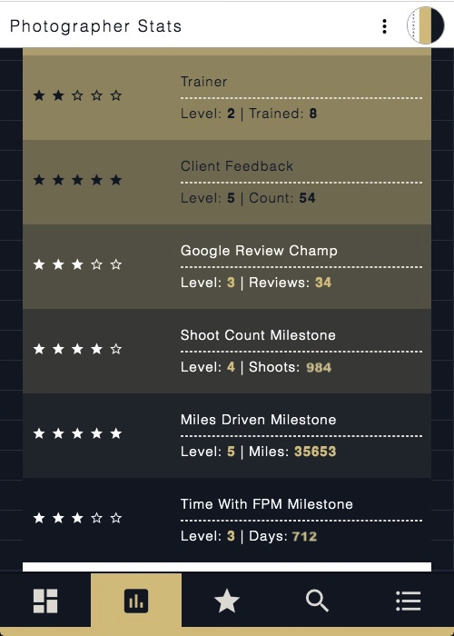
Favorites
- Display user's favorited shoots.
- Feature: Delete From Favorites
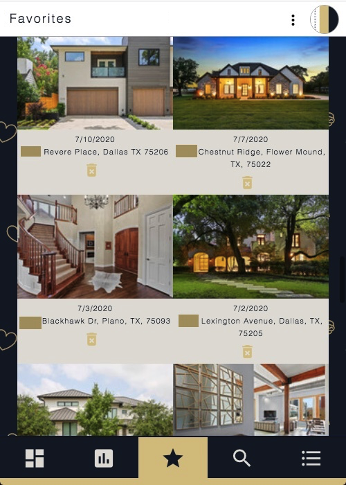
Search
- Query user's previous shoots via date or partial address.
- Feature: Search
- Feature: Add To Favorites
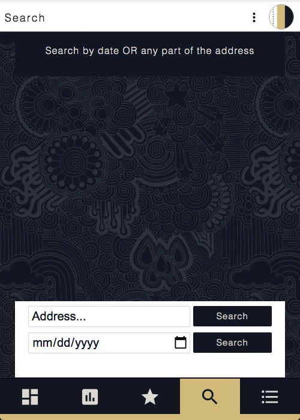 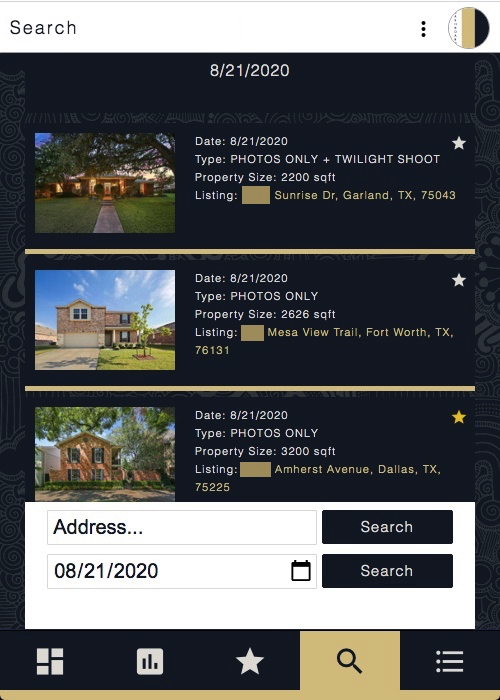 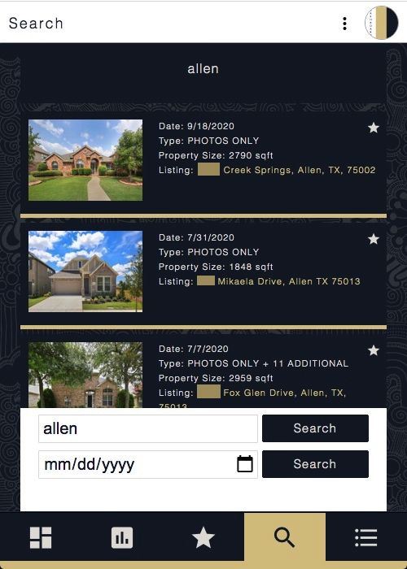
Resources
- Display photographer resources.
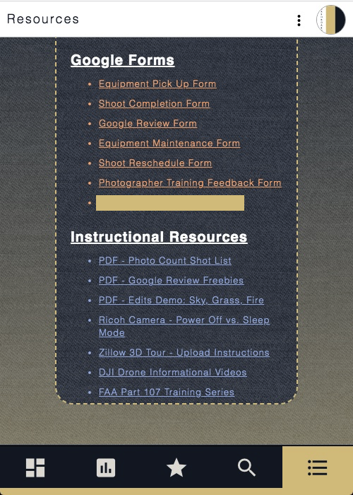
Front End Design
The front end was built using the following resources and programming languages.
...in progress...
Back End Design
The back end was built using the following resources and programming languages.
...in progress...
Architectual Diagram
The following diagram shows the flow and integration of development resources.
...in progress...
Heat Map
The photoshoot data that was aggregated into Google Sheets was used to generate the heat map below.
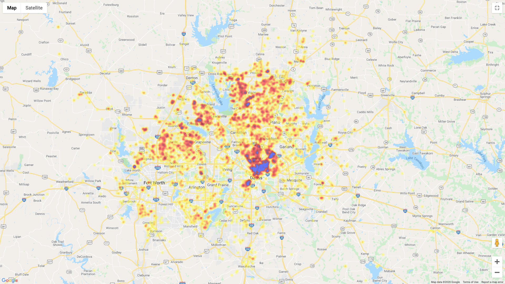